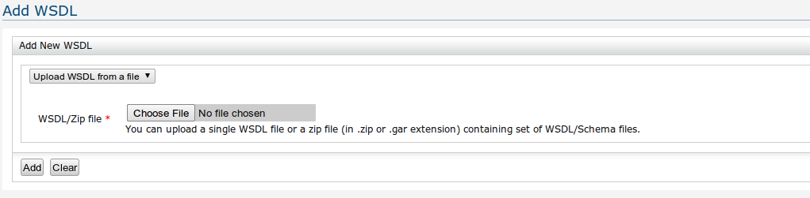
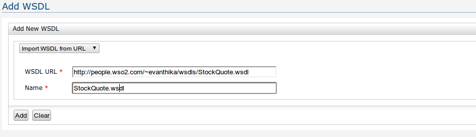

WSO2 Governance Registry stores governance metadata and information on governance related entities. Registry resources storing these information and/or metadata are known as Governance Artifacts. Examples for Governance Artifacts include Services, WSDLs, Schemas, Processes and People.
If a WSDL URL is available and you need to import service information of the Service of that WSDL, you can use the Metadata->Add->WSDL link. Once the URL is provided to the UI, a name is automatically suggested for the resource in GReg. When given WSDL is imported, a Service artifact will be automatically created for that WSDL. Details such as service name, service namespaces and service endpoints will be extracted from the WSDL and stored in the newly created Service. User can later edit this automatically created Service using the Service UI. For example, user can edit that service and enter the rest of the information which was not added through WSDL import operation, such as Authentication Platform, Authentication Mechanism etc.

Figure 1: Upload WSDL from a file

Figure 2: Import WSDL from URL
WSO2 Governance Registry performs WS-I, WSDL validations on the wsdl provided once importing is done. The result is displayed under "properties" section of the imported WSDL resource. WSDL validation can optionally be disabled from the registry.xml. Also, WSDL validation requires a connection to the internet for the very first time, and will not work on systems with no Internet connectivity.
Figure 3: WSDL validation